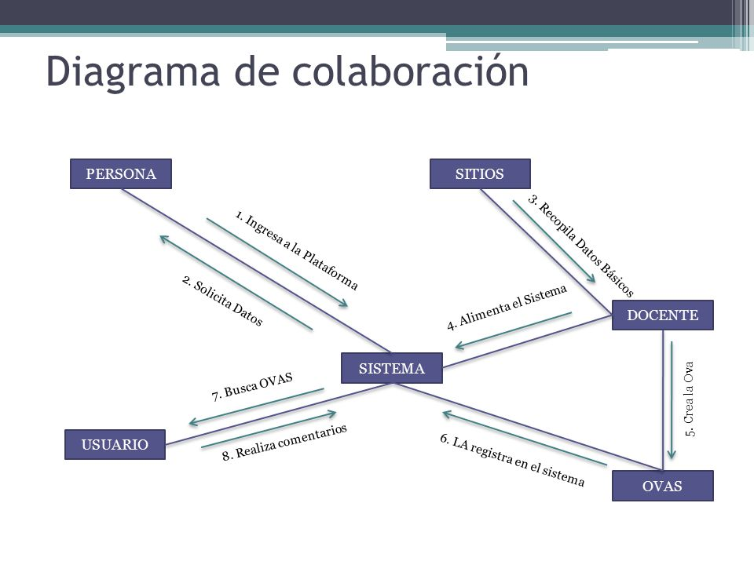

OBJETIVO GENERAL
El diagrama de colaboración es un tipo de diagrama de interacción cuyo objetivo es describir el comportamiento dinámico del sistema de información mostrando como interactúan los objetos entre sí, es decir, con qué otros objetos tiene vínculos o intercambia mensajes un determinado objeto. (https://manuel.cillero.es/doc/metrica-3/tecnicas/diagrama-de-interaccion/diagrama-de-colaboracion/, págs. 1-2)
Descripción
Un diagrama de colaboración muestra la misma información que un diagrama de secuencia, pero de forma diferente. En los diagramas de colaboración no existe una secuencia temporal en el eje vertical; es decir, la colocación de los mensajes en el diagrama no indica cuál es el orden en el que se suceden. Además, la colocación de los objetos es más flexible y permite mostrar de forma más clara cuales son las colaboraciones entre ellos. En estos diagramas la comunicación entre objetos se denomina vinculo o enlace (link) y estará́ particularizada mediante los mensajes que intercambian.
Objeto
Un objeto se representa con un rectángulo dentro del que se incluye el nombre del objeto y, si se desea, el nombre de la clase, separando ambos por dos puntos.
Vínculo
En el diagrama, un vínculo se representa como una línea continua que une ambos objetos y que puede tener uno o varios mensajes asociados en ambas direcciones. Como un vínculo instancia una relación de asociación entre clases, también se puede indicar la navegabilidad del mismo mediante una flecha.
Mensaje
Un mensaje se representa con una pequeña flecha colocada junto a la línea del vínculo al que está asociado. La dirección de la flecha va del objeto emisor del mensaje al receptor del mismo. Junto a ella, se coloca el nombre del mensaje y sus argumentos.
A diferencia de los diagramas de secuencia, en los diagramas de colaboración siempre se muestra el número de secuencia del mensaje delante de su nombre, ya que no hay otra forma de conocer la secuencia de los mismos.
Además, los mensajes pueden tener asociadas condiciones e iteraciones que se representarán como en los diagramas de secuencia.
Ejemplo
Diagrama de colaboración para el caso de uso: Prestar un ejemplar de una aplicación encargada de los préstamos y reservas de una biblioteca.
